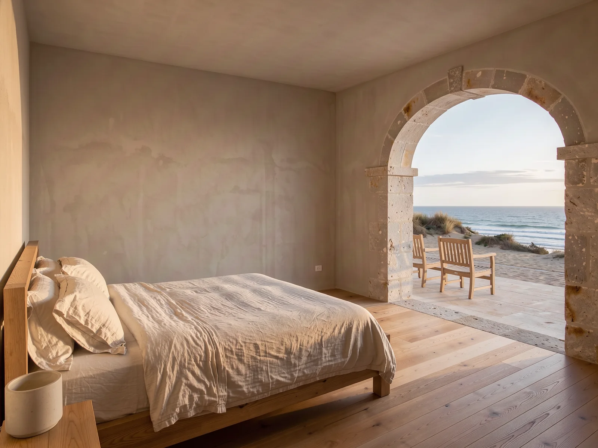
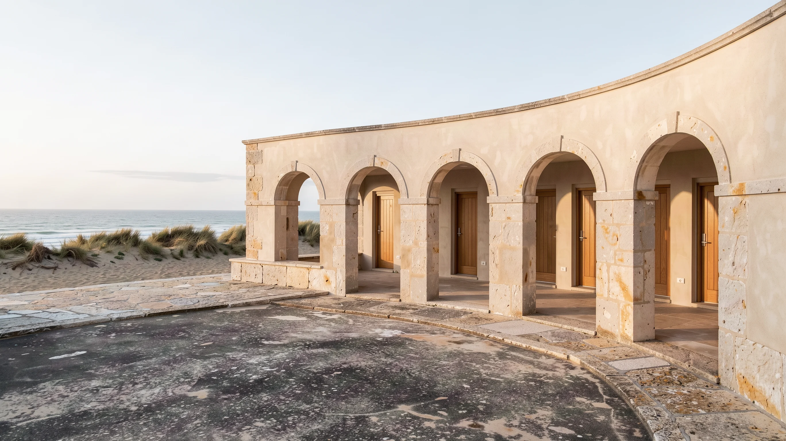
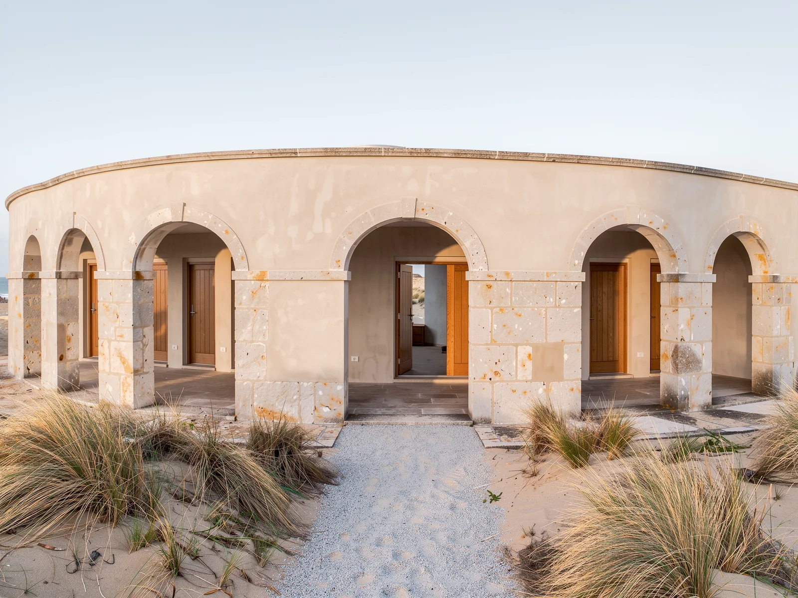
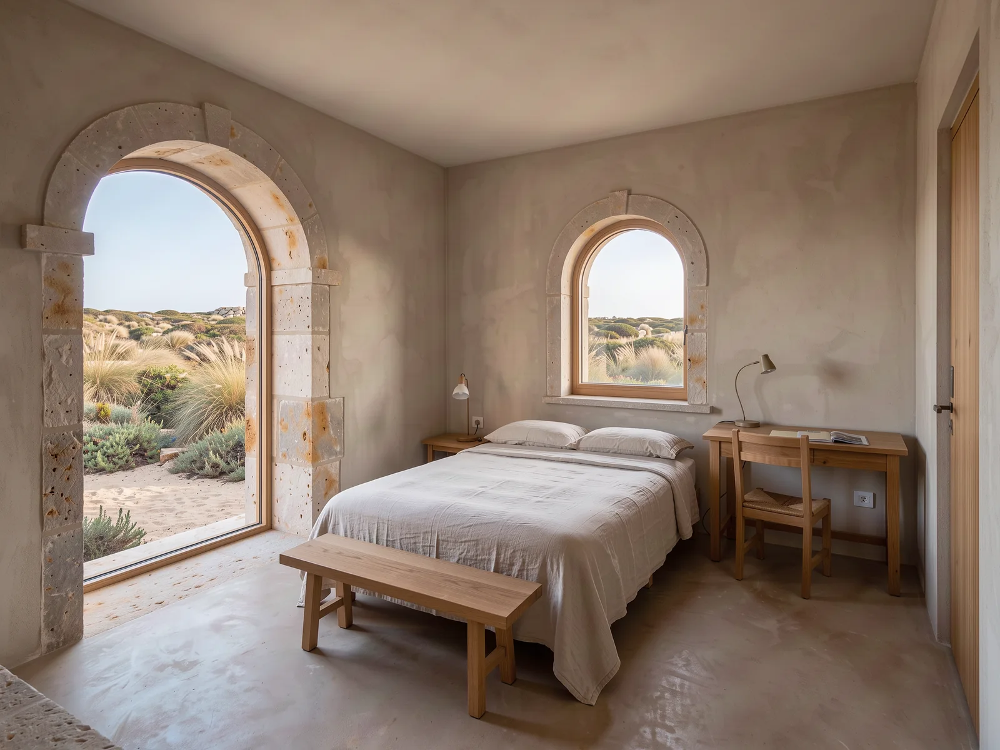
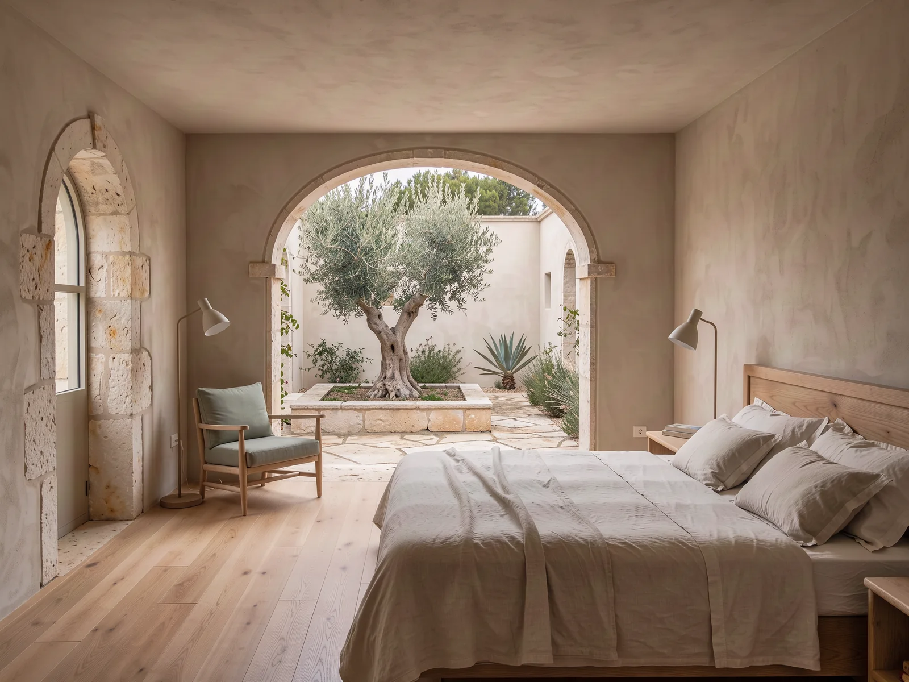
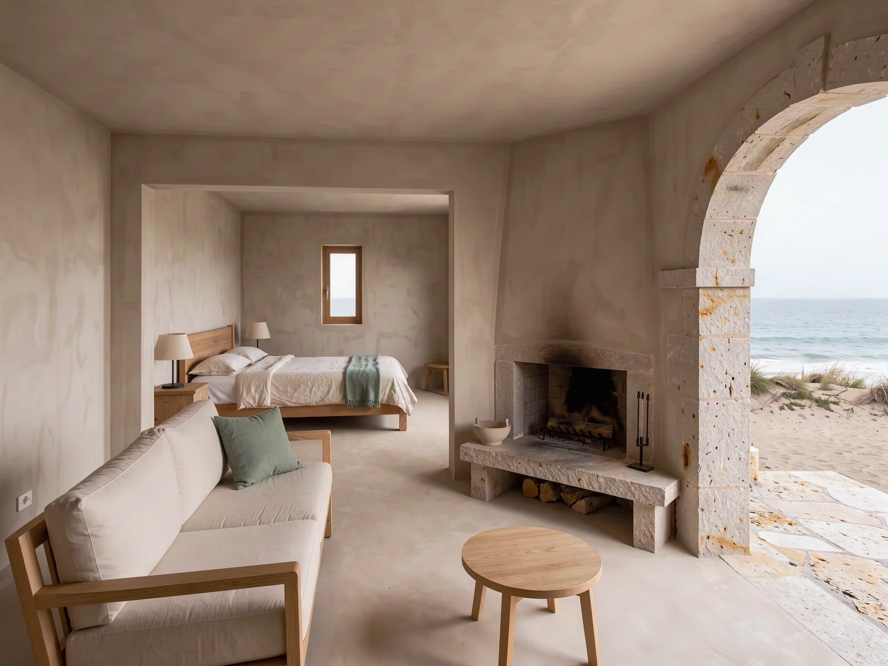
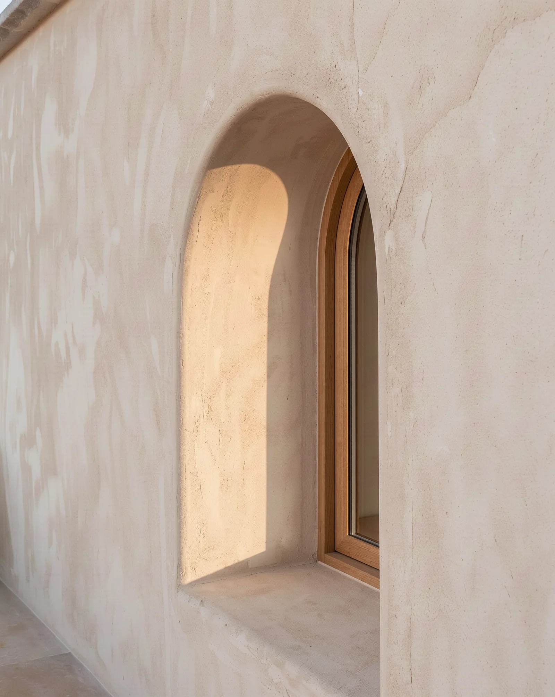
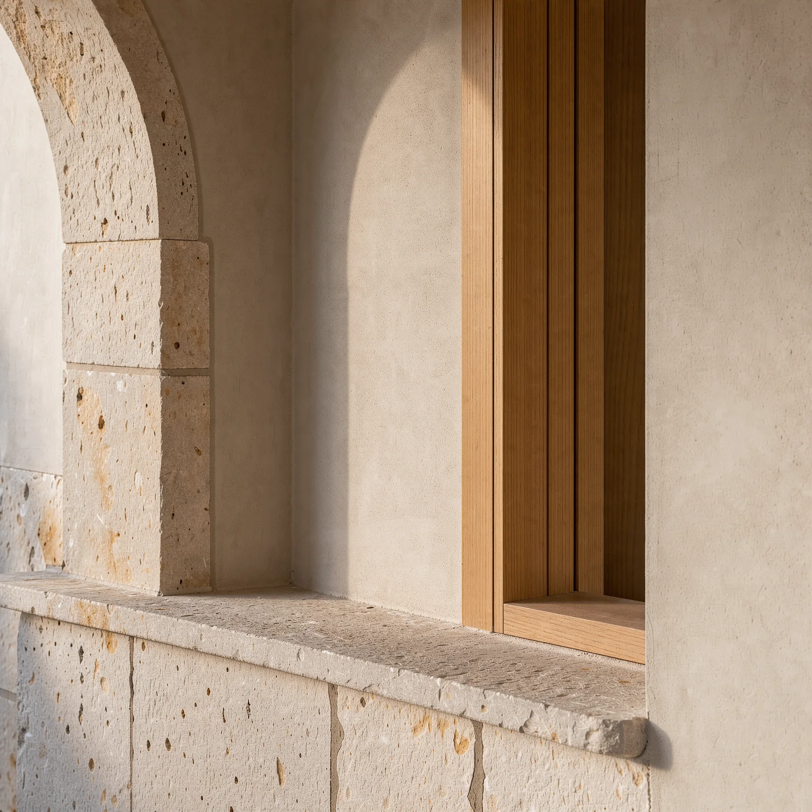
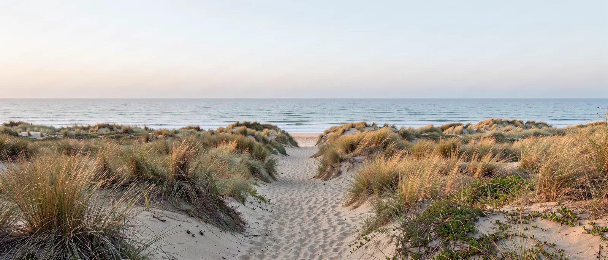

Atlantic outlook01 / 0401 · Room
Atlantic Room
A wide west-facing window, a deep terrace, and the horizon at eye level.
38 m²2 guests€310 / night
Explore the room ↗
Twelve rooms. Pale stone, warm oak, and a horizon with nothing to add.

A small house, with room to leave the day unplanned.
Sora House is a twelve-room hotel on the Atlantic coast of Portugal. The idea is simple: thoughtful spaces, honest materials, and time that belongs to you.
The thinking behind the house ↗A house shaped by the coast.Four room types. Twelve rooms in all. Nightly rates in euro.
Compare the rooms ↗
Atlantic outlook01 / 04A wide west-facing window, a deep terrace, and the horizon at eye level.

Garden outlook02 / 04Our smallest rooms, tucked behind the dunes and facing the garden.

Courtyard outlook03 / 04Three rooms around a sheltered courtyard of stone, olive and shade.

Atlantic outlook04 / 04Our only suite, with a separate lounge and the widest outlook on the coast.
Lime plaster. Oak. Linen. Stone. A palette borrowed from the coast.
Look a little closer ↗


A table to gather around. A path towards the water. A quiet place to pause.
Spend a day at the house ↗Arches, natural materials, and the changing light of the coast.
Find your room, choose your dates, and try a slower kind of stay.
Plan your stayTwelve rooms on the Atlantic coast of Portugal.